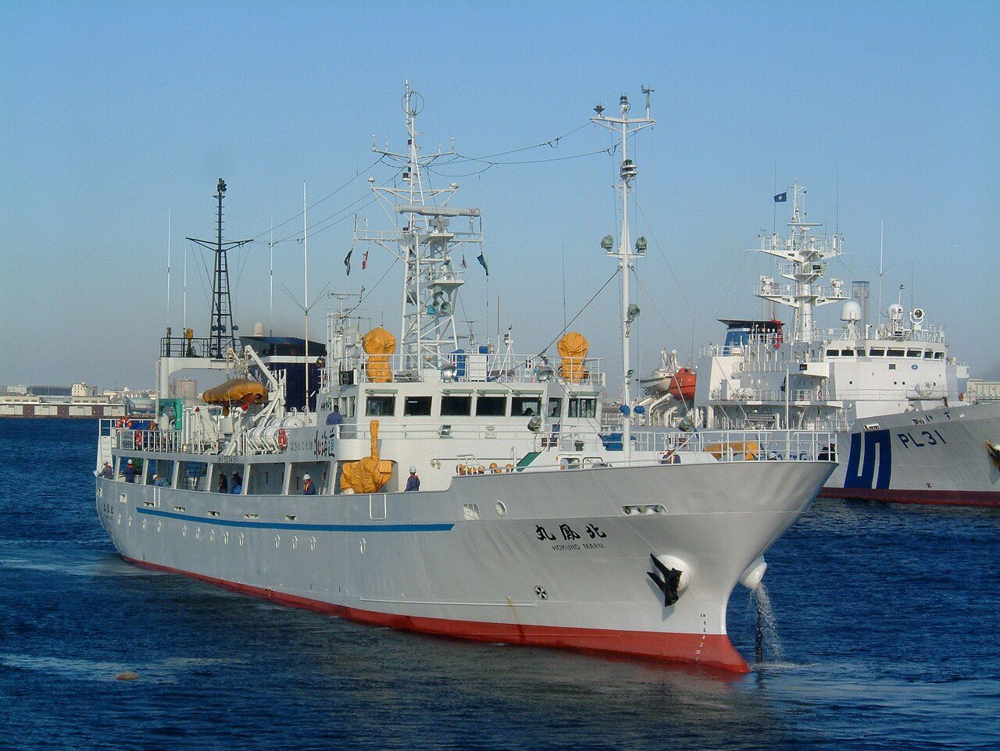
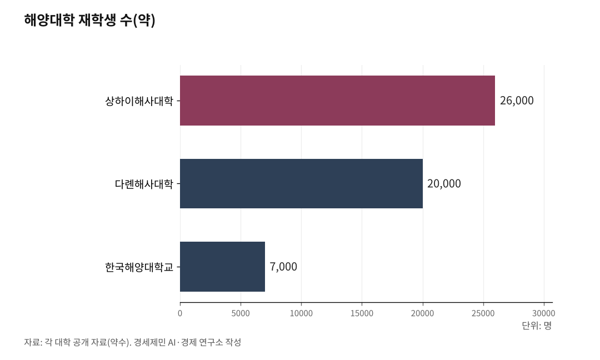

[인천해양산업, 생존기로⑤] 경인경제권, 해양대학이 없다
상하이·싱가포르·로테르담엔 다 있는데… 세계 주요 항만 도시 가운데 인천만 없다
AI경세제민=김갑봉 기자 | 세계 1위 컨테이너항 상하이에는 상하이해사대학이 있다. 2위 싱가포르에는 난양공과대학(NTU, Nanyang Technological University) 해양학과와 싱가포르해사아카데미(SMA, Singapore Maritime Academy)가 있다. 유럽 최대 항만 로테르담에는 에라스무스대학 해양경제물류학 석사 과정이 있다.

한국 2위 항만 인천에는 해양대학이 없다. 경인광역경제권 인구 2600만명, 컨테이너 355만TEU(20피트 길이 컨테이너 1대 기준, 2024년), 대중국 수출 66%(2024년, 인천항만공사). 이 거대한 해양경제권 관문 도시에 해양을 가르치는 대학이 단 하나도 없다.
세계 주요 항만에는 해양대학이 있다
상하이해사대학(Shanghai Maritime University)은 1909년에 설립됐다. 재학생 2만6000명 이상, 52개 학부 과정, 박사 과정을 갖춘 종합 해사대학이다. 중국 교통부와 상하이시가 공동으로 운영한다. "국제해운 전문가의 요람"이라 불린다.
93개국에서 유학생 885명(2019년)이 왔다. 학위 과정 241명, 비학위 과정 644명이다. 서아프리카 지역해사대학(Regional Maritime University)과 공동 학사 과정을 운영하고, 미국·한국·폴란드·러시아·독일·우크라이나 학생을 위한 국제반을 운영한다.
다롄해사대학(Dalian Maritime University)도 1909년에 출발했다. 중국 교통부 직속 유일 핵심 해사대학이다. 재학생 약 2만명. IMO(International Maritime Organization, 국제해사기구)가 공인한 우수 해사교육훈련기관이다. 1983년 UNDP(United Nations Development Programme, 유엔개발계획)와 IMO가 이 대학에 아시아태평양해사훈련센터를 설립했다. 1985년에는 세계해사대학(WMU, World Maritime University) 분교가 들어섰다. 33개국 115개 해사기관과 협력한다.
중국해양대학(Ocean University of China)은 산둥성 칭다오에 있다. 중국 교육부 직속 종합 해양대학이다. 재학생 3만6500명. 해양과학·수산·해양공학·해양경제·해양법까지 아우른다. 다롄해사대학이 해기사·해운·항만 전문인력을 키우는 '해사(海事)' 대학이라면, 중국해양대학은 해양과학부터 정책·경제·법까지 포괄하는 '해양(海洋)' 종합대학이다.
중국은 이렇게 해역별로 해양·해사 대학을 다극 배치했다. 동북 해역에 다롄해사대학, 동부 해역에 상하이해사대학, 북부 해역에 칭다오 중국해양대학. 광둥해양대학(광둥성), 저장해양대학(저장성), 하이난열대해양대학(하이난성)까지 더하면, 해안선을 따라 해양·해사 고등교육기관이 촘촘하게 깔려 있다.
싱가포르는 항만·정부·대학이 한 몸처럼 움직인다. 싱가포르해사아카데미(1957년 설립)는 해기사·해양공학·해양비즈니스 디플로마 과정을 운영한다. 난양공대는 해운경영·해상보험·용선·물류·해사법을 가르치는 해양학 학사·석사 과정을 갖추고 있다. 해양항만청(MPA, Maritime and Port Authority)이 장학금과 학비를 지원한다. MPA 아카데미는 2014년 글로벌 해양 리더십 교육 전담 기관으로 재편됐다. 2025년에는 대체연료 안전교육을 위한 해양에너지훈련시설(METF, Maritime Energy Training Facility, 해양에너지훈련시설) 디지털 체계를 발표했다. 2025년 하반기 가동을 준비하고 있다.
로테르담은 에라스무스대학이 해양 인재를 키운다. 해양경제물류학 석사(MEL, Maritime Economics and Logistics)는 해운·항만·터미널관리·물류·금융을 하나의 과정에 통합한 유럽 유일의 프로그램이다. 졸업생 75%가 3개월 안에 취업한다. 해사운송법 석사(LL.M, Master of Laws)도 운영한다. 에라스무스 도시·항만·교통경제센터(UPT)는 항만 정책과 관리를 연구한다. STC 그룹(네덜란드해사대학, STC-NMU)은 교육·훈련·연구·컨설팅을 통합 운영하는 해사 교육기관이다.
부산에는 한국해양대(1945년 출발, 재학생 약 7000명)가 있다. 목포에는 목포해양대가 있다. 인천에는 없다.

유학생이 글로벌 해양 네트워크를 만든다
스웨덴 말뫼에 있는 세계해사대학(WMU)은 1983년 IMO가 설립한 대학원 전문 교육기관이다. 졸업생 6632명이 171개국·영토에서 배출됐다. 매년 50개국 이상에서 학생이 온다.
주목할 점은 졸업 후다. WMU 졸업생들은 본국에서 해양행정 고위 관료, 항만·해운사 임원, 해사교육기관장으로 활동한다. IMO 회의에서 자국을 대표하는 인물도 많다. 한 대학이 171개국 해양 지도자 네트워크를 만들었다.
상하이해사대학도 같은 전략을 쓴다. 서아프리카·동남아 유학생을 유치해 중국 해운업 세계 진출 교두보로 활용한다. 유학생이 졸업 후 본국에 돌아가면 상하이항과 중국 해운사 현지 네트워크가 된다.
인천은 이 전략이 전무하다. 동남아·중앙아시아·아프리카에서 해양 인력을 필요로 하는 나라가 많다. 이 나라의 인재를 인천에서 양성하면 어떻게 되나. 졸업 후 인천 해상풍력 O&M(Operation & Maintenance, 운영·유지보수) 기업, 해사법원, 인천항만공사에 취업할 수 있다. 본국으로 돌아가면 인천항 취항 네트워크가 확대된다.
인천공항은 50개국 이상 직항 노선을 갖추고 있다. 송도에는 UNCITRAL(United Nations Commission on International Trade Law, 유엔국제상거래법위원회) 아시아태평양지역센터가 있다. 유학생을 유치할 인프라는 이미 갖춰져 있다. 해양대학만 없다.
인천의 해양 인재, 부산으로 빠진다
경인광역경제권에서 해양을 전공하려면 어디로 가야 하나. 인하대 해양학과 정도가 전부다. 해기사(선장·기관장)를 양성하는 과정은 0개다. 해운경영·해사법·항만물류를 전문으로 가르치는 학과도 없다.
경인권 학생이 해양을 전공하려면 부산 한국해양대나 목포 목포해양대로 가야 한다. 졸업 후 부산·목포에서 취업하고 정착한다. 인천으로 돌아오지 않는다.
④편에서 다뤘듯이 인천 7GW(기가와트) 해상풍력의 O&M 인력만 413~7000명이 필요하다. 해기사, 해양공학 기술자, 해사법 전문가가 대규모로 필요한데 인천에서 양성할 수 없다.
국립대 균형도 문제다. 부산에 국립대가 4개(부산대·부경대·한국해양대·부산교대), 광주·전남에 7개가 있다. 인천권역(인천·부천·김포·시흥)에는 인천대 1개뿐이다. 2013년에야 국립으로 전환했다.
해사법원은 오는데 해사법 가르칠 곳이 없다
해사법원이 2028년 인천에 개원한다. 해사 분쟁을 전문으로 다루는 법원이 생긴다. 그런데 해사법 전문 법조인을 양성할 대학원이 인천에 없다.
해사법은 일반 민·형사법과 전혀 다르다. 선박충돌·해상보험·용선계약·선하증권·해양오염손해배상·선박우선특권·해난구조 등 고도로 전문화된 영역이다. 현재 이 분야를 가르치는 곳은 한국해양대 해사법학과와 일부 법학전문대학원 세미나 정도다. 인천에는 없다. 번외①에서 다뤘듯이 해사법원 개원까지 2년 남짓인데, 전문인력 양성 교육은 시작조차 하지 않았다.
해양경찰청 본청이 송도에 있다. UNCITRAL 아태센터가 인천에 있다. 해사 수사부터 해사재판, 국제해사중재까지 한 도시에서 이뤄지는 구조가 만들어진다. 이 구조를 채울 전문인력을 양성할 기관만 빠져 있다.
로테르담은 에라스무스대학에서 해사운송법 석사를 마친 인재가 유럽 최대 항만의 법률 분쟁을 처리한다. 인천은 해사법원이 열려도 전문 법조인을 어디서 데려올지 답이 없다.
해양대학 없는 항만 도시, 인천뿐이다
정리하면 이렇다.
중국은 해안선을 따라 해양·해사 대학을 다극 배치했다. 동북 해역 다롄해사대학(2만명), 동부 해역 상하이해사대학(2만6000명), 북부 해역 칭다오 중국해양대학(3만6500명). 광둥·저장·하이난에도 해양대학이 있다. 해역마다 전문인력을 키우는 체계가 촘촘하다.
싱가포르(세계 2위)에는 난양공대 해양학과와 해사아카데미가 있다. 로테르담(유럽 1위)에는 에라스무스대학 MEL과 네덜란드해사대학이 있다.
한국은 어떤가. 부산(세계 7위)에 한국해양대(7000명), 목포에 목포해양대. 둘 다 남해권이다. 서해권에는 해양대학이 하나도 없다. 중국이 해역별로 해양대학을 배치하는 동안, 한국은 남해권에만 몰아놓았다.
인천(한국 2위)에는 없다. 세계 주요 항만 도시 가운데 해양대학이 없는 곳은 인천뿐이다. 이것은 형평성의 문제가 아니다. 항만 도시에 해양대학이 있는 것은 해양 선진국의 공통된 전략이다. 인천에 해양대학이 없다면 국가 해양교육 체계에 구멍이 뚫린다.
그렇다면 왜 인천에 해양대학이 생기지 못했나. ⑥편에서 그 장벽을 짚는다.
참고문헌
·"Shanghai Maritime University", Shanghai Municipal People's Government, 2024. https://english.shanghai.gov.cn/
·"About IEC", Shanghai Maritime University International Education College. https://smuiec.shmtu.edu.cn/
·"Dalian Maritime University Introduction", Dalian Maritime University. https://english.dlmu.edu.cn/
·"Ocean University of China", Ocean University of China 공식 웹사이트. https://www.ouc.edu.cn/
·"World Maritime University Alumni", WMU 공식 웹사이트. https://www.wmu.se/
·"Bachelor of Science in Maritime Studies", Nanyang Technological University. https://www.ntu.edu.sg/
·"MPA Academy", Maritime and Port Authority of Singapore. https://www.mpa.gov.sg/
·"MSc in Maritime Economics and Logistics", Erasmus University Rotterdam. https://www.maritimeeconomics.com/
·"LL.M in Maritime and Transport Law", Erasmus University Rotterdam. https://www.eur.nl/
·"2024년 인천항 컨테이너 물동량", 인천항만공사 보도자료, 2025.
사진 출처
· [대표사진] Ootahara, "Hokuomaru5 a fishery training vessel of Hokkaido Government Board of Education.jpg", 위키미디어 공용, CC0, https://commons.wikimedia.org/wiki/File:Hokuomaru5_a_fishery_training_vessel_of_Hokkaido_Government_Board_of_Education.jpg
※ 이 기사는 인공지능을 활용해 작성했습니다.
관련기사
- [인천해양산업, 생존기로⑥] 인천 해양대, 법이 막고 해수부가 외면
- [인천해양산업, 생존기로④] 해상풍력 O&M(운영과 정비)
- [인천 해양산업, 생존기로 ③] 7GW 배후항만, 10만평 되겠나... 에스비에르의 8분의 1
- [인천해양산업, 생존 기로 2] 해상풍력 53조 '무주공산'... 연구 인프라 전무
저작권자 © AI경세제민 무단전재 및 재배포, AI학습 및 활용 금지